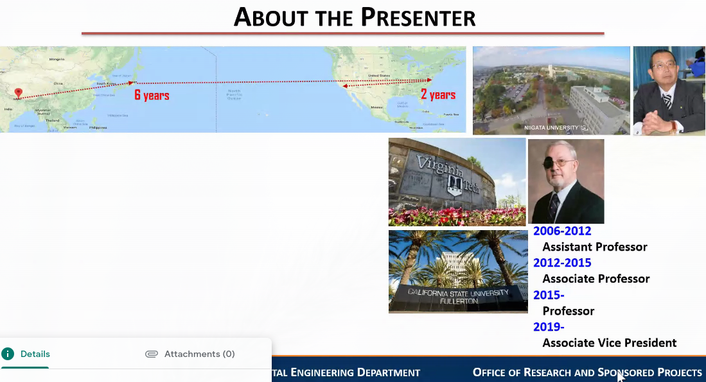
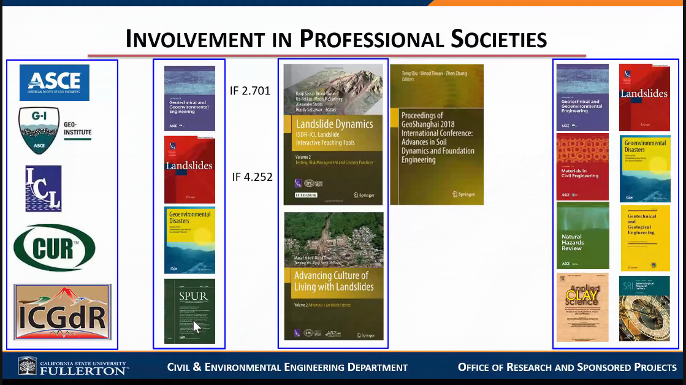

Manuscript Writing
Table of Contents
Notes from webinar "Manuscript Writing: Key to effective scientifc communication" on June 21 2020 (9:00-10:00 am)
Webinar by Binod Tiwari (Depart. Of Civil Engineer in University of California)
Notes by Bibek Panthi
1. Personal Info
- from Gorkha
- two schools there
- then TU Pulchowk Campus (1987-1991)
- 6 months works in Pulchowk Campus as lecturer
- then Depart of road
- then Japan
- then Virgina Tech work with Michael Duncan (Legend of Geotech) ??
Now at Californai State University, Fullerton. He handles research work in the University and handle research grands. He's been there for 14 years.


1.1. Californai State University
- 23 campuses
- Fullerton is one of them
1.2. Involvement of Professional Societies

- Fellow of ASCE
- Goe-Institute student challenge sth ko chair
- Handles 10 to 15 papers at one time.
- Published in about 13 different journals
Editor at
- American … of geotechnical engineer (IF 2.701)
- Landslides (IF = 4.452)
- Geoenvironmental Disasters
- SPUR
Editor in some books
- Lanslide dynamics
- …
Not all journals are counted in web of science, scopus and hence they don't have IF (Impact Factor)
2. Web of Science Publication (2019)

3. Journal Review Process

- Executive Editors check language, scope, length
- Handling editors assign Reviewers
- 2-3 Reviewers review (in depth review)
- Handling editor make decision after the review, they can either
- Reject
- if can be improved, its returned back for changes
- don't compromise any of the comments of your reviewer, it may get rejected in second review. Rather spend a month to check and tighten the loose end than to submit in hurry.
Review process take
- usually 5-6 months
- if you are very very luck 2-3 months.
4. Before you start your research
- Check your interest, strength, expertise, capacity
If you do high quality research, if you are expert in your area, then the reviewer will double check before declining your paper
- Do search - what has already been done and what needs to be done
- Best way of search is Literature Search
- How will it contribute to our current knowledge/understanding
- How do you conduct it?
- figure out the resources, collaborations,
- Numerical analysis ko skill xa bhane experimental analysis garne sanaga collaborate garne, …
- In US funding is available (70-80 Million Dollar for Binod sir's campus)
- Timeframe and resources needed - issues may not be relevant after some time
- In US a typical research has 2-3 years
- Make a solid research and publication plan
5. Before you start writing a research Manuscript
- You now have research results in your hand
- Complete your analysis
- Complete analysis of each test, as soon as they are done with the test, because if you wait and sth is wrong you may need to redo 60% of the work
- Review whether your results are complete to tell a story
- Because it may get rejected, you loose a year.
- Check the journal that your study best fits into
- you see citations, relevant papers in that field
- if your paper is not cited there is no value in that paper, more the citations better. So choose appropriate journal
- Look into the guidelines
- There may be page length limitation
- Take a full day to digest the guideline
- Check what types of papers have been published in that journal
- So you get idea, pattern, style of the journal
- Think about the story your are telling (How do your start and end the story)
- Rethink about the novel contribution of your study to current science/engineering practice
- If the idea is novel, you may submit as technical note as opposed to original idea
6. Structure of Manuscript
- Conceptualize a general flow of your manuscript
- How you start,
- Reviewer's should not feel lazy reading the article
- Develop Objective of the study and set up theory
- Set up a general structure of your manuscript
- Start filling in bullet point details what you will be writing
- Setup outline, then bullet points inside each (sub-)sections
- Think about where you will be filling in supporting information
- Where will you put tables, figure, citations
- Emphasize the main take away of your work that you want to deliver to peers
- Indicate one extremely heavy important thing for the society
- Don't try to give multiple idea in same paper
- Write other paper for other ideas
6.1. Example of Structure
- Abstract :
- Key Words : gives visibility,
- Don't be lazy in selecting the best keywords that describe the paper
- Background Information/Introduction
- Materials and Methods
- Somethings physical materials, somethings software
- Results
- Dont' dump whatever you have done in the result
- Select the best things you have found. (Somethimes only 30% of your findings work best)
- Discussion/Interpretation
- Summary and Conclusion
- Acknowledgement
- References
- Fill in subheadings as per requirement
7. Specifics on withing the structure
7.1. Abstract
- succinct write up of the entire story
- write after you complete your article
- there's word limit (be within it)
- first thing the reviewers read is abstract so
Break down
- Start with - why is this study needed?
- Follow with - what were the objectives?
- how were the studes conducted?
- what were the findings?
- close with - main conclusion (1 or 2 sentence of heavy weight conclusion)
- Don't write very general abstract that doesn't give concrete idea.
7.2. Keywords
- 4-8 words
- Select them very carefully, as its how your paper will be searched
- be specific and use commonly understood terms
7.3. Background Information/Introduction
- This will help the readers to understand the context - warm up part
- If I am a reviewer
- I should enjoy your information
- understand and get energized by the theory
- start with the main focus of the study;
- make flow smooth and interesting to bind the focus of reviewer and readers
- don't jump back
- don't be redundant
- if flow's not smooth they will miss main thing
- write what has been done and what still need to be know - key question
- supplemnt with sufficient background information through current literature review
- by citing good articles you save words in your article
- then you don't have to repeat the theory
- tell about what the literature desn't cover. i.e what your study will contribute to
- end with a praragraph with the objective of your study, specifically to provide answers to our knowledge gap
7.4. Materials and Methods (Methodology)
- you may use sub headings
- outline the process of your study
- mention in detail how were the studies conducted if they are not standard methods (e.g. ASTM) so that other researchers can replicate your work easily
- write the source of materials/ documents / software used
- if available (i.e. already published), provide enough references for some tests to save space
- sometimes providing schematic diagram save space and increases clarity
- tables may save space and increase clarity. Tables are always good
7.5. Results
- Finish your analysis first and select the most representative and relevant figures and table from your detailed analyses prior to writing this section
- you may provide all other figures in supplement resources
- Write in detail what you observed from your study and support each statement with representative figures and tables;
- proper validation of your hypothesis (if there's one)
- Accurately perform your analysis - any error in your analysis may lead to rejection
- check with hand calculation
- reviewers may redo your analysis
- even if your paper gets accepted with wrong analysis, you will regret later
- There is no need to present everything you have.; don't show all derivation ; just select the information that is the most relevant to your discusson and conclusion
- Paper must be such that reader can read your paper in one flow, one sitting. FLOW IS EVERYTHING
7.6. Discussion
- prove why your work is novel
- don't mix with result with discussion
- result show finding
- discussion shows the importance of your research
- mention the limitations of the study
- clearly mention how this work will help us in engieering practise and …
- if your work doesn't contribute our current body of knowledge or it cannot be generalized, it will be rejected.
- if your work is incremental (i.e. not complete), it will be rejected
7.7. Summary and Conclusion
- Authors have their own ways of writing summary and/or conclusion but make sure you are presenting captivating conclusions
- how you preformed the study (briefly)
- wirte what you found
- bullet point only 3-4 major take away for your study (THREE is best)
- write limitations of your study
- avoid citing references in the conclusion
- all conclusion must be discussed previously in the manuscript
7.8. Acknowledgement
- if some researchers have very limited contirbution mention them here. co-authorship requires significant contribution
- don't acknowledge reviewers
7.9. Reference
- follow submission guideline
- make sure that only relevant references are cited
- having long reference list doesn't make paper better
- only cite the article what you read
- even if article is great, wrong citation will lead to rejection. Accurately cite the information picked from the literature in the body of the manuscript
- reference list should be current (recent)
- avoid citing non-english references or papers which are not easily available
7.10. Major resons for rejection
- errors in grammar and syntax
- hard to read
- poor quality figures and tables including illegible labels
- content out of scope of journal
- content overlapped with already published articles
- poorly articulated results and interpretation
- lack of relevant literature review
- lack of novel contribution to research field pertinent to the study
- unnecessarily long background and misbalance of contents
8. To do and not to do
8.1. Do
- perform detailed anlaysis
- select best journal, and read paper published in that journla
- wirte, reveiew, revise and rereview, by peers
- check tehnical english and preseneted data as well as figures for accuracy
- complete extensive literature reiview pror to starting writing the manuscript
- write manuscript succinclty to tell a story
- in conclusion write 3-4 take away only
8.2. Don't
- don't submit already published content
- don't cite non-current and unavailable literature
- don't exceed page length and word cound
- don't use inconsistend unit of measurement system
- don't copy and paste phrase from published artices or documents - plagarism
- don't cite without read the articles properly
9. QA
9.1. Result and Discussion in one section? or two section?
Upto the author.
If interpretation, write within result. Good. But don't repeat in Dicussion.
Redundancy is a NO-NO. Do whatever makes the flow better.
Result and Interpretation in one section Then discussion (discussion tells what's new, what's important)
sometimes give your article to someone who doesn't know your subject (say a highschool student) and inquire what they learnt from reading the paper.
9.2. How to choose appropriate journal?
IF?
- if you can, shoot for the best
- because big journals will reject right away
- papers that do go to review, half is will be get rejected
- if you think your paper is not good enough, try on second level journal. but at least
- publish in journals from Web of Science index
- or at least scopus index
- mushroom journals, open access journal have no value
- having technical note in high quality is better that having orignial research in low quality journal
9.3. what is indexing and impact factor?
Impact Factor captures how many articles the journal published and how many were cited.
SCI index is also similar: also uses how may ppaper,s how many cited, also takes into account timefactor.
5 year IF is mostly used (??)
9.4. Genuine Software required?
- Doesn't matter
- But most software give license for students and researchers
9.5. How to balance between abstract, … ?
- Paper writing is not science, its an art.
- Balance them nicely. :)
- Write, Read, Re Write, Re Read.